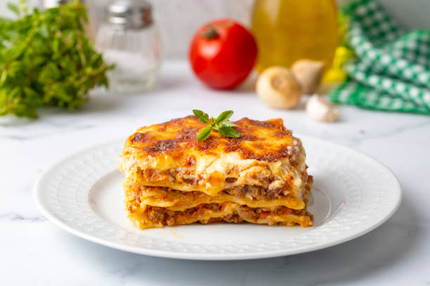

Lasagna Recipe

Description
Lasagna, also known by the plural form lasagne, is a type of pasta made in very wide, flat sheets. In Italian cuisine it is used to make the dish lasagna by stacking layers of pasta, alternating with fillings such as ragù, béchamel sauce, vegetables, cheeses, and seasonings and spices.
Ingredients
- Olive oil
- Ground beef
- Onion
- Large bell pepper
- Garlic cloves
- Tomato sauce
- Tomato paste
- Crushed Tomatoes
- Oregano
- Fresh parsely
- Italian seasoning
- Garlic powder
- Red or white wine vinegar
- Salt
- Cup sugar
- Dry lasagna noodles
- Ricotta cheese
- Mozzarella cheese
- Parmesan cheese
Steps
- Put pasta water on to boil
- Brown the ground beef
- Cook the bell pepper, onions, and garlic; add back the beef
- Make sauce
- Boil and drain the lasagna noodles
- Preheat the oven to 375 degress fahrenheit
- Assemble the lasagna
- Bake
- Cool and serve
Home